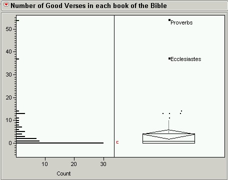
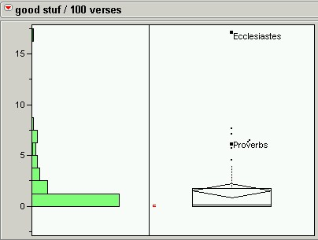
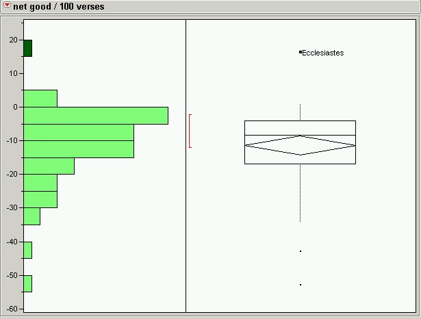

|
|
|
Good Stuff Dwindling in Unbelief -Which has more good stuff, the Bible or the Quran? -Bad Books of the Bible -The best book in the Bible -The best book in the Bible (Revisited) |
In the SAB, I identify the Bible's verses that contain good advice about how we should live our lives, whatever our religious views might be. For example, I think it's a good idea to try, at least as much as possible, to treat others kindly. So I include Leviticus 19:18 ("Love thy neighbor as thyself.") in the "Good Stuff". Of course, not all the verses that I've marked good are as good as this verse, but I marked them good because they seemed (at least somewhat) good to me. So take a look at the SAB's good stuff to see if you agree, at least most of the time, that the verses that are marked good are, in fact, good. If so, then the following analysis should be reasonable for you, as well. I'll begin with a plot of the number of good things in each book of the Bible.  There are two far outliers in the data: Ecclesiastes and Proverbs. Proverbs has the most good stuff, but it is also a much bigger book. Here is how it looks when size is taken into account. (The graph on the left is a histogram; the graph on the right is a box plot.)  So Ecclesiastes has nearly twice as much good stuff (per 100 verses) than any other book in the Bible. But what about all the bad stuff in the Bible? Shouldn't we try to find a way to rate the goodness of a book by weighing both the book's good and bad stuff? The simplest solution, I think, is to count up the good things in each book and subtract the bad. The result is the net good. (I totaled cruelty, injustice, intolerance, family values, women, and homosexuality to get the number of bad things, since the verses marked with these categories are all morally objectionable.) When I did that, I found that there are only two good books in the Bible: Ecclesiastes (of course) and Proverbs. There are three others that have a zero net goodness. The other 61 books are all more bad than good (with a negative net goodness). Here are the statistics for the two good and three not bad books in the Bible. (I'll deal with the bad books elsewhere.)
And here's a plot of the net good / 100 verses.  |